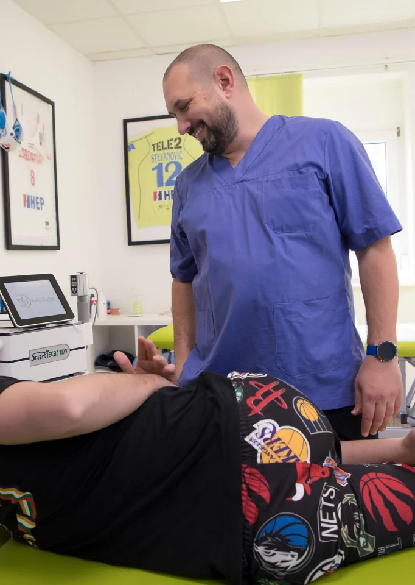
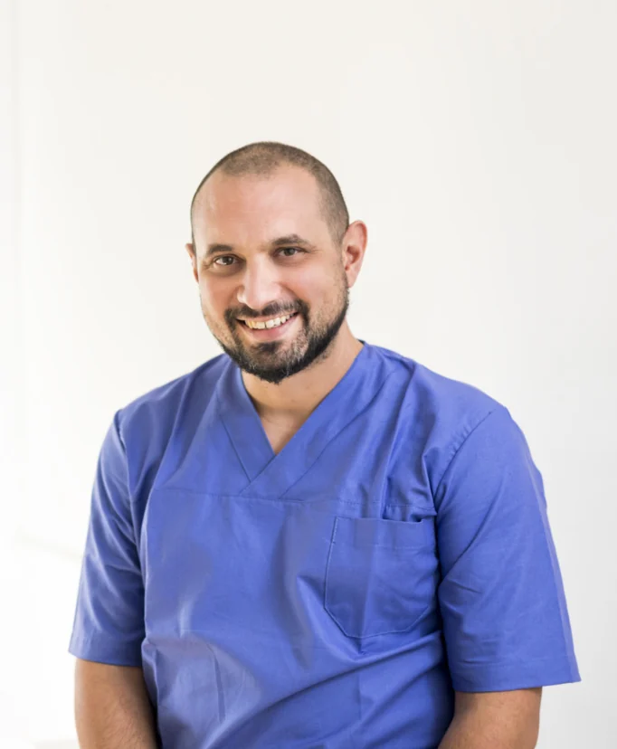

STRUČNE RUKE. OSOBAN PRISTUP.
Ponovno u
pokretu.
Ponovno svoji.
Vaše tijelo ima svoju priču. Mi je slušamo.
Fizioterapija i rehabilitacija prilagođene vama,
ovdje na Srdočima u Rijeci.

FIZIO CENTAR CVITANOVIĆiskustva
Podrška u svakom koraku.
01 / KAKO VAM MOŽEMO POMOĆI
Vaš put do
slobodnijeg pokreta.
Od prvih tegoba do povratka aktivnostima.
Biramo pristup prema vašem stanju,
potrebama i ciljevima.

Zlatan CvitanovićFizioterapeut02 / UPOZNAJTE SVOG FIZIOTERAPEUTA
Stručnost kojoj vjerujete.
Čovjek koji vas sluša.
Iza svake terapije stoji čovjek.
Iza našeg centra — Zlatan.
Zlatan Cvitanović završio je studij fizioterapije na Medicinskom fakultetu Sveučilišta u Rijeci. Tijekom 20 godina rada stekao je iskustvo s ortopedskim, neurološkim, reumatskim i pedijatrijskim pacijentima.
Posebno je posvećen manualnoj terapiji i radu sa sportašima. Kontinuirano se educira, a svakom pacijentu pristupa individualno — uz stručnost, razgovor i osmijeh.
TERAPIJA KOJA DOLAZI K VAMA
Vaš oporavak. U vašem domu.
Kada zbog zdravstvenog stanja ne možete doći u centar, fizikalnu terapiju i rehabilitaciju provodimo kod vas. Nazovite nas za dogovor o mogućnostima dolaska.
03 / ISKUSTVA PACIJENATA
Povjerenje se gradi.
Iz dana u dan.
„Zlatan i kolegica Nives su izuzetno pristupačan i profesionalni tim fizioterapeuta.”
„Od samog početka dočekao me topao i ugodan pristup, a istovremeno iznimno profesionalan rad.”
„Brzi i učinkoviti popravci! Isti dan možeš ići raditi. 😁”
Ocjena i broj recenzija prema Google profilu, listopad 2026.
04 / POGLED U NAŠ SVAKODNEVNI RAD
Stvarni ljudi.
Stvarna posvećenost.
DOBRO JE ZNATI PRIJE DOLASKA
Imate pitanja?
Tu smo za vas.
Ako niste sigurni odakle krenuti,
razgovor je uvijek dobar prvi korak.
Kako mogu dogovoriti termin?
Nazovite nas na 091 569 0315 ili pošaljite e-poštu na fizio.zlatan@gmail.com. Zajedno ćemo dogovoriti termin dolaska.
Trebam li uputnicu?
Za dolazak u privatnu praksu uputnica nije potrebna. Termin možete dogovoriti izravno s centrom.
Kako izgleda prvi dolazak?
Počinjemo razgovorom o tegobama i procjenom pokretljivosti. Zatim dogovaramo individualan plan i ciljeve terapije.
Koliko će mi tretmana trebati?
Broj dolazaka ovisi o vašem stanju i napretku. Nakon početne procjene razgovaramo o okvirnom planu, koji tijekom oporavka prilagođavamo.
Dolazite li u dom pacijenta?
Da, provodimo fizikalnu terapiju i rehabilitaciju u domu osoba kojima je dolazak u centar otežan. Za mogućnosti i dogovor nazovite centar.
VAŠ SLJEDEĆI KORAK
Krenimo prema
boljem pokretu.
Javite nam se. Saslušat ćemo vas
i zajedno dogovoriti prvi dolazak.